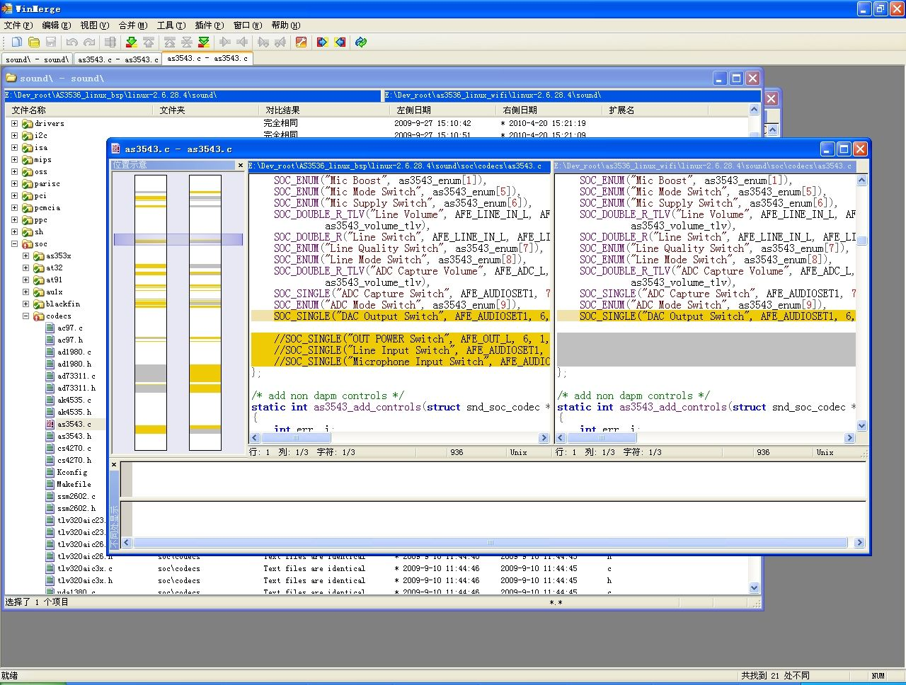
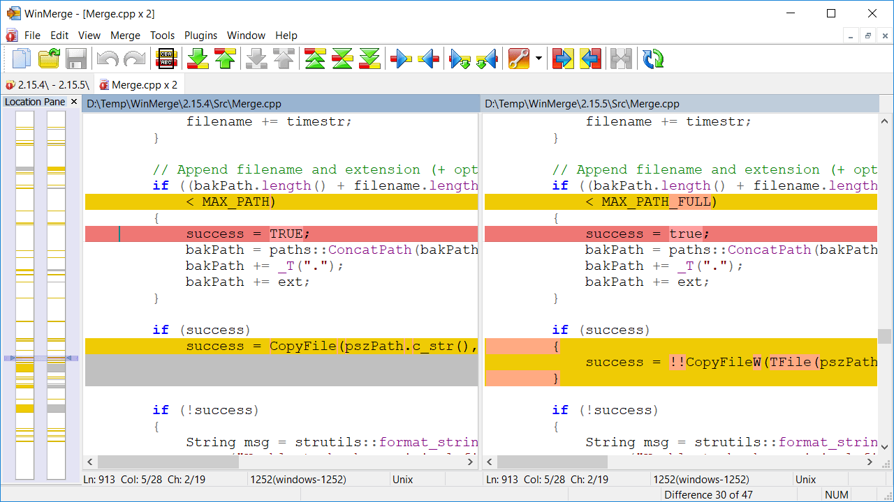

WinMerge
WinMerge- 官网
- WinMerge - You will see the difference…
- 下载地址
- 特点
- 文件夹比较功能相对不错
- 官网
使用心得或注意事项
- 以树状显示文件夹和文件
- 选中你新建的项目后，默认是全部列出来你的当前文件夹下面的文件的，如果想要树状显示，要：
- 视图->Tree Mode，即可以树状显示了
- 选中你新建的项目后，默认是全部列出来你的当前文件夹下面的文件的，如果想要树状显示，要：
- 仅显示不同（文件有变化）的文件，不显示相同的文件
- 点击 视图，取消对“显示完全相同的项目”的选择
- 让WinMerge像BeyondCompre一样，可以在右键菜单中，分别选择将要进行互相比较的两个文件或文件夹
- 首先要在安装的时候，选中“集成到资源管理器右键菜单(E)”,其实默认已选择此项了。
- 然后安装完后，启动WinMerge后，选择 编辑->选项->Shell Integration ->选中：
- Explorer的tab项中的：
Add To Context Menu允许高级菜单默认包含子文件夹
- 和，
Folder compare的tab项中的：Add Shell menu to context menu
- Explorer的tab项中的：
- 这样，对着某个文件或文件夹，点击右键，先选择“和另外一个对比”，再选择“对比”，就可以对比两者了。
效果如下：

官网截图：
